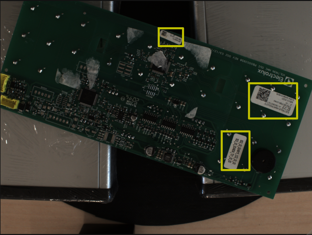
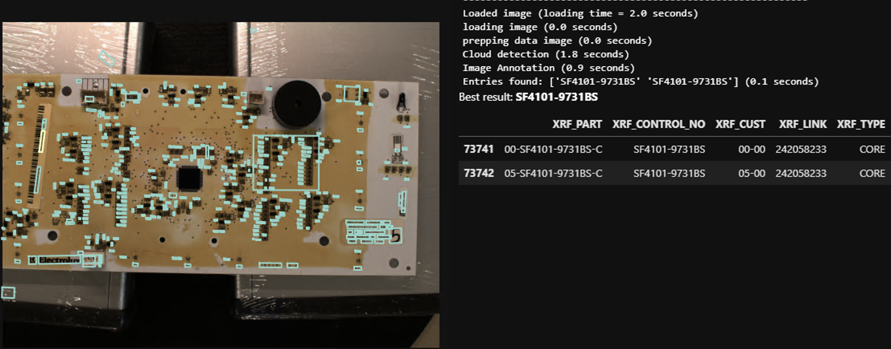

This opportunity presented itself at GIS, where our industry partner, CoreCentric, was looking for automated solutions to many of their factory processes.
One aspect of the process flow that interested me greatly was identifying boards based on part numbers printed on labels. This is an interesting application of computer vision and machine learning, and so seemed satisfying professionally. Additionally, it massively reduces the load on human operators who are currently entering in part numbers by hand. This made it personally satisfying as well.
First, I imaged boards and manually identified bounding boxes. Next, I naively trained a YOLO model on this new dataset. This was very successful. I then moved on to character recognition. Designing a set of pre-processing steps, I was able to use Tesseract to extract part numbers from the extracted labels. This was not as successful as the localization, as Tesseract is very sensitive to a number of different factors (detailed in the final report).
Running into diminishing returns with Tesseract, I decided to look into other options. As part of this search, I discovered that commercial options (such as Google's Natural Language API) can not only recognize localized text but can also localize that text. After some short experimentation, and the construction of a demo, it became clear that a custom solution would be unnecessary.
While I was disappointed that the solution to this problem already exists, I am quite glad that the solution can be implemented so soon. This task is a horrible one to have to do manually, so automating it as soon as possible should be the priority. I am also quite proud of my solution, as it is not perfect but it does successfully locate labels, extract text, and identify boards. With this idea no longer innovative enough (no need to re-invent the wheel), I have moved on to another of CoreCentric's manual processes – damage assessment of board components. For more details on this project, see the final report linked below.